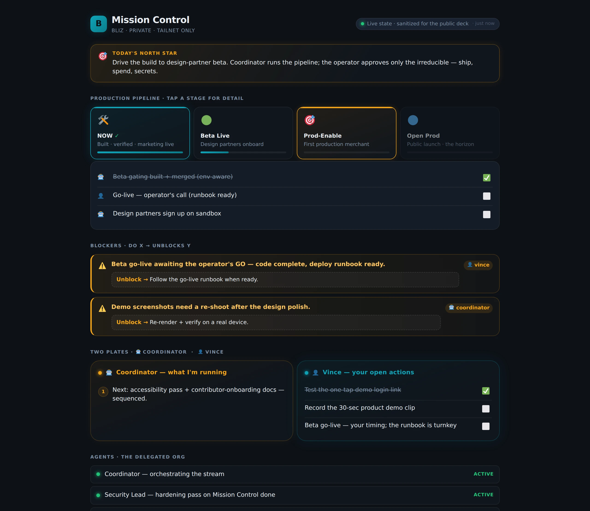

A system that builds systems — steered from your pocket.
One operator A multi-function org Run async, from a phone
00 The unexpected thing
The AI built its own ops tool.
Mission Control
A live, two-way ops dashboard — built by the coordinator, for itself.
It didn't wait to be asked: when the build needed a tracking surface, it built one — then ran its own security-hardening pass (token gate, localhost-only bind, strict input validation, SSE cap) and shipped it. One day.
Live now — real-time, two-way
Coordinator writes state → the board moves in ~1 s via SSE. You check off an item → the coordinator sees it. Open questions deeplink to Telegram. Next (v2.5): auto-pull from the tracker.

The real board, running today — contents sanitized for this public deck. The live one carries the actual company pipeline & blockers, on a private tailnet URL.
01 The mental model
Four levels of leverage
L0
Prompt → output
You are in the loop for everything. You are still the CPU.
L1
Agent → whole task
You hand off a task, you review the result. One at a time.
L2
System → whole domain
You build the builder once. Coordinator + specialists + compounding memory. Doer → architect.
L3
System → builds tools to run itself
The system surfaces its own operational needs and builds for them. That's Mission Control.
02 The leverage shift
What changes at L2
Parallel
many agents at once
Persistent
restarts are lossless
Async
work happens without you
Partitioned
each agent holds its own context
Pocket
a phone is enough to steer it
You stop being the person who does the tasks — and become the person who designs the system that does them.
03 How this arrived here
The climb
Chats & research
A smarter search / thought partner. Useful — but disposable. No compounding.
Coding sessions
First taste of "it did a whole thing" — and of doing it badly. Output ceiling = brief quality.
"Get it done" era
Single agent, task-at-a-time, ever-longer prompts. Faster — but the human stayed the bottleneck.
Agentic loops
The agent runs, hits a decision, pings the operator, continues. Closer — but one thread, context filling fast.
Coordinator + specialists + Mission Control
Each specialist has a charter, its own context, its own memory. The system builds its own ops surface. Only the irreducible needs approving.
04 Not a metaphor — native primitives
Built on the Claude Code harness
Subagents
Your specialists — planner / builder / reviewer + the functions. Real, dispatched.
Skills
The capabilities — bootstrap · adopt · preview. Auto-invoked from a brief.
CLAUDE.md
The coordinator's charter — loaded every session.
Persistent memory
Durable facts that compound across sessions.
Mission Control
Real-time, two-way, security-hardened ops surface — built, hardened, and maintained by the coordinator. SSE updates in ~1 s; you check off an item and it sees it.
The control plane
Telegram relay + Tailscale mesh — steer it from your pocket.
No framework to learn — you already have the runtime.
05 The plumbing
The control plane
Telegram relay
Async from the human side. Agent pings the phone → a one-sentence reply → it continues. Works on any network; sends files readable in-app.
Tailscale mesh
WireGuard mesh VPN. Mac, phone, cloud worker on one private network — no ports exposed. Mission Control lives here, at a private URL opened from the phone.
SSH fallback
A real terminal into the same mesh, on iOS, for when a log or a shell is needed. The escape hatch — not the primary interface.
Live
Vision → a running MVP
A one-line idea never built before — spun up live from the kickoff repo. One brief: the bootstrap skill proposes a stack, scaffolds it fresh, runs a test — then a link to open it on your phone. All watched from a phone.
brief→scaffold→test→steer→preview link
Interactive demo
Mission Control — the org, in space
Interactive demo · illustrative data — hit ▶ to watch it build · drag to fly through it.
06 The proof case — what this method produced
Bliz — built this way, solo
Non-custodial B2B payments for cross-border invoicing, settled in stablecoins. A full-stack fintech product — the kind that normally needs 3–4 engineers. Live at www.bliz.io.
175k
lines of Rust — 12-crate workspace (+209k TS/TSX)
87
database migrations
2,411
commits over ~11 months
Chain-agnostic
EVM, Solana & Bitcoin live — new chains added on demand. Non-custodial, with sponsored transfers (EIP-3009 + Solana fee-payer)
Conservative inputs: $160k/yr fully-loaded FTE, 7-month duration, 3.5-person realistic team. The AI/tooling line is rounding error against one salary.
Add Mission Control: a continuously-maintained ops surface a product-ops hire would take weeks to build — maintained at zero marginal cost.
3.4×
labour-cost multiplier on this one build
Built part-time — a headcount claim, not a wall-clock claim.
08 What keeps proving itself
What stuck
Coordinator + specialists
Orchestrate, don't do the domain work. Each has a charter.
Context is the scarce resource
Delegate to protect it. Keep domain knowledge at the edge.
Minimise the operator's plate
Decide-and-run the reversible. Surface only the irreducible — values, outside-world, one-way doors.
Trust = boundaries
Automate only what you can fully recover from. It commits and pushes behind local gates; it stops at spend and destruction.
Persistent memory
Sessions still degrade — memory is what makes restarting them lossless. Session 40 re-grounds from files, not recall.
The system builds its tools
When Mission Control emerged, it wasn't planned — the system surfaced the need, built it, hardened it, and now maintains it. Real-time, two-way, running today.
09 “Does it just hallucinate code?”
The quality bar
Quality is structural, not a vibe. The reason it isn't just confident hallucination — every build has to clear this bar:
A runnable proof, GREEN The success criterion is a test that runs — not a description.
Actually run Never “done” on an unrun build. Paste the real result.
An independent reviewer Runs it itself, reads the diff. No rubber-stamp.
Look at it Anything visual gets rendered and eyeballed — never code-only.
No spin A red is reported as a red. You decide on what's true.
Honest limits The README leads with what it does and doesn't. Multiplies a builder; doesn't replace one.
10 It grows with your product
Idea → MVP → scaling
①
Idea → MVP
One brief → a running, tested app. (What you just saw.) ~26s on the zero-dep fast path.
②
MVP → iterate
Steer + add — small, reversible, tested. The app grows.
③
iterate → scale
Structure emerges at the right size. Modules → layers → surfaces → a monorepo with boundaries. The org — and its ops tools — grow alongside.
Real, but not automatic — the system does the building; you steer and make the calls at every step.
11 Honest limitations
What's still hard
Context takes discipline Windows are finite and compact. Recall holds — but only if you keep memory + the tracker current.
It runs on your machine A laptop saturates running many agents at once. Hosted workers are the scale answer.
Judgment stays human Values, relationships, reading a room — not delegable. Probably for good.
12 Spin up your own
Take it with you
Clone it and make it yours. A one-person AI build-org in a starter kit — no frozen templates; the bootstrap skill scaffolds fresh from your brief. Two on-ramps:
bootstrap — greenfield
Propose a stack → scaffold fresh → green test. (~26s on the zero-dep fast path.)
adopt — brownfield
Point it at a repo you already have → it onboards the pattern, additively.
Early still — but it runs on the principles you just saw. Plenty of room to grow, and you can use it to improve itself.
github.com/vinceferro/kickoff
13 If you take one thing
The shift that mattered: stop making tasks faster — build the system that builds them. That's the leverage that compounds.
One engineer. 3.4× labour multiplier on a real fintech product.The AI built Mission Control — its own ops tool.It multiplies a builder. It doesn't replace one.
Thanks.
A system that builds systems — steered from your pocket.